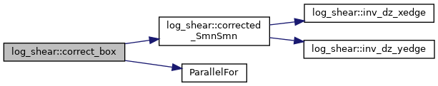
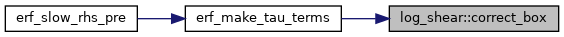
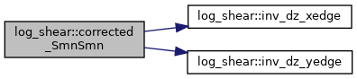
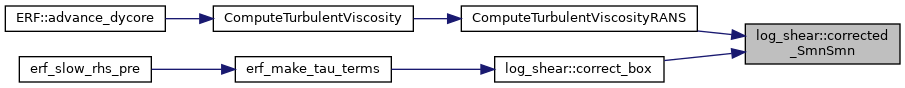
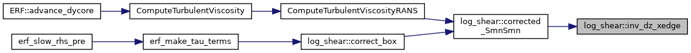
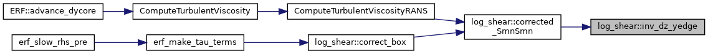

- Generated by
 1.9.1
1.9.1
|
ERF
Energy Research and Forecasting: An Atmospheric Modeling Code
|
Functions | |
| AMREX_GPU_HOST_DEVICE AMREX_FORCE_INLINE amrex::Real | inv_dz_xedge (int i, int j, int k, const amrex::Array4< amrex::Real const > &z_nd) noexcept |
| AMREX_GPU_HOST_DEVICE AMREX_FORCE_INLINE amrex::Real | inv_dz_yedge (int i, int j, int k, const amrex::Array4< amrex::Real const > &z_nd) noexcept |
| AMREX_GPU_HOST_DEVICE AMREX_FORCE_INLINE amrex::Real | corrected_SmnSmn (int i, int j, int k, amrex::Real SmnSmn, const amrex::Array4< amrex::Real const > &u, const amrex::Array4< amrex::Real const > &v, const amrex::Array4< amrex::Real const > &s13, const amrex::Array4< amrex::Real const > &s23, const amrex::Array4< amrex::Real const > &d, amrex::Real z0, const amrex::Array4< amrex::Real const > &z_nd) noexcept |
| void | correct_box (const amrex::Box &bx, const amrex::Box &domain, const amrex::Array4< amrex::Real > &SmnSmn, const amrex::Array4< amrex::Real const > &u, const amrex::Array4< amrex::Real const > &v, const amrex::Array4< amrex::Real const > &s13, const amrex::Array4< amrex::Real const > &s23, const amrex::Array4< amrex::Real const > &d, const amrex::Array4< amrex::Real const > &z0, const amrex::Array4< amrex::Real const > &z_nd) |
erf.rans_shear_stencil = log_law (k-eqn RANS, issue 5261): the vertical gradients of u and v in the strain invariant S_mn S_mn, exact for a logarithmic profile over the ground.
ComputeSmnSmn averages the strains of the faces below and above a cell, which for du/dz is the central difference (u_{k+1} - u_{k-1}) / (z_{k+1} - z_{k-1}) on uniform layers. For the profile u = (u_* / kappa) ln((d + z0) / z0) that difference is larger than du/dz at the cell center by the factor (d_k + z0) ln((d_{k+1} + z0) / (d_{k-1} + z0)) / (d_{k+1} - d_{k-1}): 1.21 in the second cell of uniform layers, 1.06 in the third and 1.03 in the fourth (z0 << dz), and 1 + dz^2 / (3 d^2) far from the ground. The shear production of k, 2 nu_t S_mn S_mn, is then 46 %, 12 % and 6 % high there (45 %, 12 % and 6 % with z0 = 0.1 m and dz = 15.625 m).
Here, in a cell k above the wall cell and below the top cell,
du/dz = (u_{k+1} - u_{k-1}) / [ (d_k + z0) ln((d_{k+1} + z0) / (d_{k-1} + z0)) ]
and the same for v, with u and v averaged to the cell centers, d_k the closure's wall distance, d_{k-1} and d_{k+1} that distance less and plus the height differences of the cell centers, and z0 the surface layer's roughness length of the column. S_mn S_mn changes by the difference of its (1,3) and (2,3) terms; dw/dx, dw/dy and the other components stay as ComputeStrain_* formed them. A cell whose d_{k-1} + z0 would not be positive is left as it is.
The stencil is exact for the log profile only. For a profile that is linear in d it returns the gradient divided by the factor above (17 %, 6 % and 3 % low in the cells 2, 3 and 4), so it is less accurate than the central difference where the profile is closer to linear than to logarithmic: in a stable layer above about L / 5 (L the Obukhov length), and well above the ground, where both errors are below 1 %. On sloping ground d is the distance to the wall and the height differences are vertical, so the form is exact to leading order in the slope only.
|
inline |
Replace S_mn S_mn by corrected_SmnSmn in the cells of bx above the wall cell and below the top cell of the domain. The wall cell keeps the strain of its faces (the lower one is the one-sided difference to the ghost value under the surface layer) and the top cell that of the top boundary.
| [in] | bx | cells ComputeSmnSmn filled |
| [in] | domain | domain of the level |
| [in,out] | SmnSmn | S_mn S_mn of the cells |
| [in] | u | x velocity the strains were formed from |
| [in] | v | y velocity the strains were formed from |
| [in] | s13 | (1,3) strain on the x-z edges |
| [in] | s23 | (2,3) strain on the y-z edges |
| [in] | d | wall distance of the cells [m] |
| [in] | z0 | roughness length of the surface layer (one layer, k = 0) [m] |
| [in] | z_nd | nodal physical heights |
Referenced by erf_make_tau_terms().


|
noexcept |
S_mn S_mn of cell (i,j,k) with the log-consistent vertical gradients of u and v.
The caller keeps k above the wall cell and below the top cell of the domain: the stencil reads the velocities of the cells k-1 and k+1, the edges k and k+1 (none of them a boundary edge) and the nodes k-1 to k+2.
| [in] | i | cell index in x |
| [in] | j | cell index in y |
| [in] | k | cell index in z |
| [in] | SmnSmn | S_mn S_mn of the cell from ComputeSmnSmn |
| [in] | u | x velocity (x faces) |
| [in] | v | y velocity (y faces) |
| [in] | s13 | (1,3) strain on the x-z edges, as ComputeSmnSmn read it |
| [in] | s23 | (2,3) strain on the y-z edges, as ComputeSmnSmn read it |
| [in] | d | wall distance of the cells [m], read in the cell (i,j,k) only |
| [in] | z0 | roughness length of the column [m] |
| [in] | z_nd | nodal physical heights |
Referenced by ComputeTurbulentViscosityRANS(), and correct_box().


|
noexcept |
Inverse of the vertical distance over which ComputeStrain_{N,S,T} difference u on the x-z edge (i,j,k), the edge below u(i,j,k): the height difference of the u points k and k-1. It is dz on uniform layers, (dz_k + dz_{k-1}) / 2 on stretched layers and dz / h_zeta (Compute_h_zeta_AtEdgeCenterJ) on a terrain-fitted mesh.
| [in] | i | x index of the edge |
| [in] | j | y index of the edge |
| [in] | k | z index of the edge |
| [in] | z_nd | nodal physical heights |
Referenced by corrected_SmnSmn().

|
noexcept |
As inv_dz_xedge for v on the y-z edge (i,j,k) (Compute_h_zeta_AtEdgeCenterI).
| [in] | i | x index of the edge |
| [in] | j | y index of the edge |
| [in] | k | z index of the edge |
| [in] | z_nd | nodal physical heights |
Referenced by corrected_SmnSmn().
